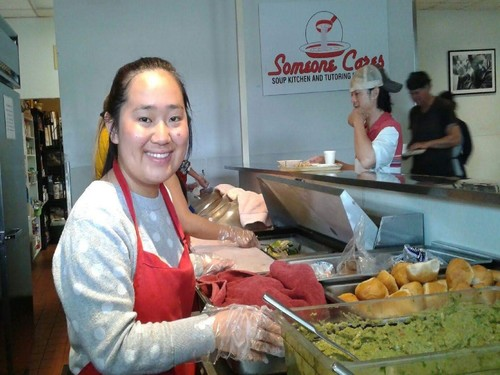
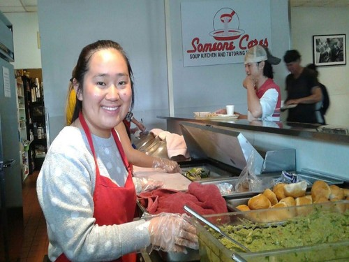

Audrey Tang
My name is Audrey Tang and I am from Fountain Valley, Orange County, located in Southern California near the coast. I am currently a full time undergraduate student at the University of California Riverside studying Sociology. I am an aspiring lawyer and have recently joined the Phi Alpha Delta Pre-Law Fraternity of the Riverside Chapter in order to guide me on my path to law school. I have not had many paid work experiences. However, I have volunteered at many different places in my community on numerous occasions. Places that I have volunteered at in the past include Second Harvest Food Bank of Orange County located in Irvine, California and Someone Cares Soup Kitchen located in Costa Mesa, California. In addition, in high school, I was part of an organization by the name of PAWS. As a member of the organization, I participated as a volunteer at the local zoo at their annual Halloween "Boo at the Zoo" event. During this event, I greeted visitors, interacted with both children and their parents, and served food to customers. Although I do not have much paid work experience, I have a lot of volunteer experience and am an eager, dedicated, and quick learner. Volunteer work has taught me so much about how to interact with others specifically, how to act in a respectful, professional manner whilst maintaining composure and patience. In addition, the most vital skills I've learned through my volunteer work is not only how to cooperate with others, but how to adapt to the changing work environment and being able to complete my tasks on time, in an effective, precise manner. All of these skills that I have gained have prepared me for college and one day, will aid me in the workforce.
Experience
Volunteer
• Served food to the homeless
• Vacuumed and mopped floors
• Cleaned dining tables
Volunteer
• Sorted fruits, vegetables, meats, and dairy products for the needy
• Packaged fruits, vegetables, meats, and dairy products
Fraternity Member
• Gained knowledge about law school, the LSAT, and life as a lawyer
• Learned to network
• Learned to conduct myself in a professional manner
Education
UC Riverside
Portfolio
 (1).jpg)
.jpg)

.jpg)
